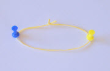
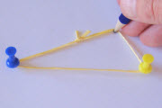
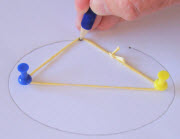
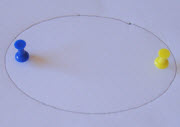

Ellipse
An ellipse usually looks like a squashed circle:
"F" is a focus, "G" is a focus,
and together they are called foci.
(pronounced "fo-sigh")

The total distance from F to P to G stays the same
In other words, we always travel the same distance when going from:
- point "F" to
- to any point on the ellipse
- and then on to point "G"
You Can Draw It Yourself
Put two pins in a board, and then ...

put a loop of string around them,

insert a pencil into the loop,

stretch the string so it forms a triangle,

and draw a curve.
It is an ellipse!
It works because the string naturally forces the same distance from pin-to-pencil-to-other-pin.
A Circle is an Ellipse

In fact a Circle is an Ellipse, where both foci are at the same point (the center). So to draw a circle we only need one pin!

A circle is a "special case" of an ellipse. Ellipses Rule!
Definition
An ellipse is the set of all points on a plane whose distance from two fixed points F and G add up to a constant.
Major and Minor Axes
The Major Axis is the longest diameter. It goes from one side of the ellipse, through the center, to the other side, at the widest part of the ellipse. And the Minor Axis is the shortest diameter (at the narrowest part of the ellipse).
The Semi-major Axis is half of the Major Axis, and the Semi-minor Axis is half of the Minor Axis.
Major Axis Equals f+g

Remember from the top how the distance "f+g" stays the same for an ellipse?
Well f+g is equal to the length of the major axis.
Can you think why? (Try moving the point P at the top.)
Calculations
Area is easy, perimeter isn't!
Area

The area of an ellipse is:
π × a × b
where a is the length of the Semi-major Axis, and b is the length of the Semi-minor Axis.
Be careful: a and b are from the center outwards (not all the way across).
(Note: for a circle, a and b are equal to the radius, and you get π × r × r = πr2, which is right!)
Perimeter Approximation
Rather strangely, the perimeter of an ellipse is very difficult to calculate, so I created a special page for the subject: read Perimeter of an Ellipse for more details.
But a simple approximation that's within about 5% of the true value (so long as a isn't more than 3 times longer than b) is as follows:
Remember this is only an approximation! (That's why the "equals sign" is squiggly.)
Example: An ellipse has a semi-major axis of 5 cm and a semi-minor axis of 3 cm
Area:
Area = π × a × b = π × 5 × 3 ≈ 47.12 cm2
Perimeter (Approximation):
p ≈ 2π√52 + 322 ≈ 2π√25 + 92 ≈ 2π√17 ≈ 25.9 cm
Tangent
A tangent line just touches a curve at one point, without cutting across it. Here's a tangent to an ellipse:
Here's a cool thing: the tangent line has equal angles with the two lines going to each focus! Try bringing the two focus points together (so the ellipse is a circle) ... what do you notice?
Reflection
Light or sound starting at one focus point reflects to the other focus point (because angle in matches angle out):

Have a play with a simple computer model of reflection inside an ellipse.
Eccentricity

The eccentricity is a measure of how "un-round" the ellipse is.
The formula (using semi-major and semi-minor axis) is:
√(a2−b2)a

Section of a Cone
We also get an ellipse when we slice through a cone (but not too steep a slice, or we get a parabola or hyperbola).
In fact the ellipse is a conic section (a section of a cone) with an eccentricity between 0 and 1.

Equation
By placing an ellipse on an x-y graph (with its major axis on the x-axis and minor axis on the y-axis), the equation of the curve is:
x2a2 + y2b2 = 1
See Ellipse Formula Derivation.
Note: the formula is similar to the equation of the hyperbola: x2/a2 − y2/b2 = 1, except for "+" instead of "−")
Parametric Equations
We can also use parametric equations, where we have another variable "t" and we calculate x and y from it, like this:
- x = a cos(t)
- y = b sin(t)
(Just imagine "t" going from 0° to 360°, what x and y values would we get?)